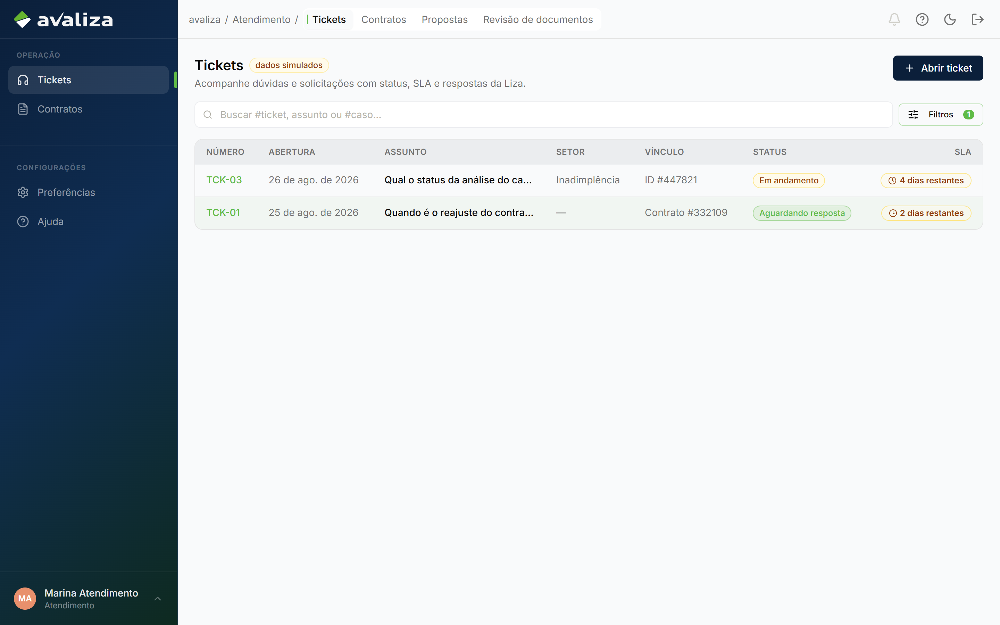
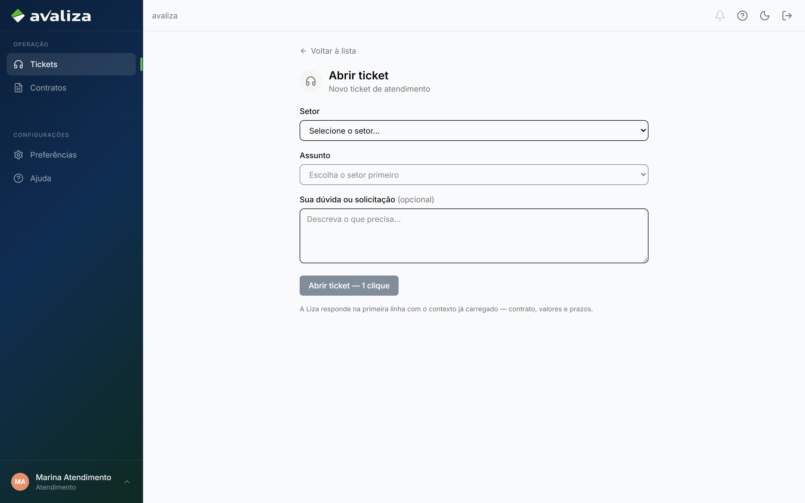
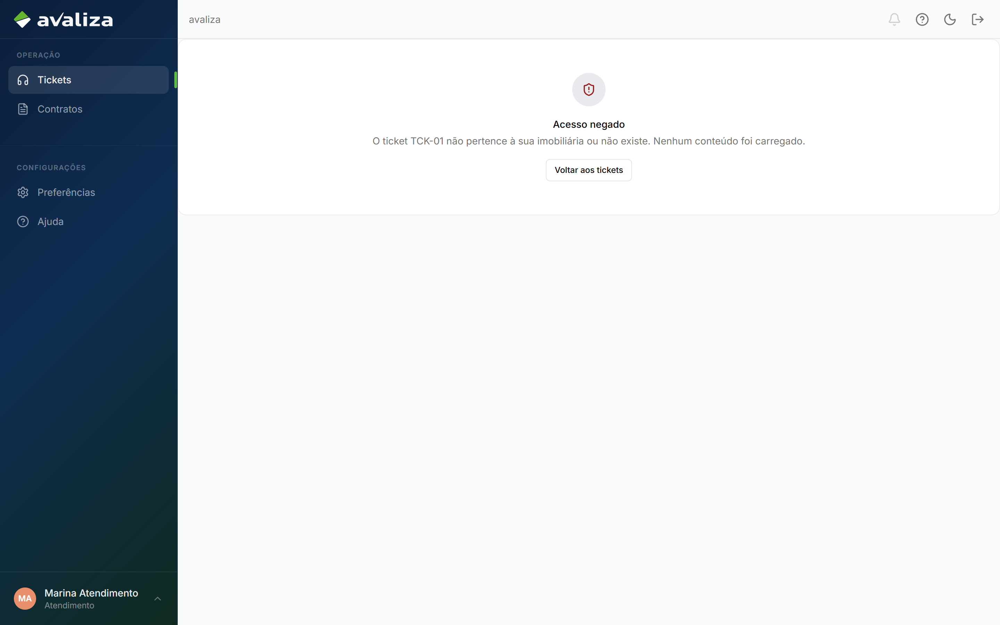

Documento para o responsável · Analista de atendimento
Para: Responsável de Atendimento
Atendimento
Triar e fechar ticket. O chamado pode apontar para banca ou IN — não os substitui. Revisão de documentos é capacidade, não esta jornada.
O que vocês fazem
O trabalho no produto, na ordem em que costuma aparecer no dia. Tela é evidência; não é etapa de um tour.
-
Triar a fila de tickets
Abrir, classificar, mandar ao setor dono. Isso fecha o ciclo de atendimento.
Ticket de atendimento ·
/atendimento
/atendimento -
Abrir um chamado
Quando alguém bloqueia ou a Liza faz handoff.
Ticket de atendimento ·
/atendimento/novo
/atendimento/novo -
Trabalhar o ticket
Até finalizar. Perguntar por que reprovou não decide crédito; chamado de IN não cobre.
Ticket de atendimento ·
/atendimento/tickets/TCK-01
/atendimento/tickets/TCK-01 -
Revisar documentos
Fila de conferência. Não é ticket e não é jornada de garantia.
/documentos/revisao
/documentos/revisao
Ciclos que vocês fecham
Jornadas cujo resultado é deste setor. Fronteira, não o passo a passo acima.
vocês entregam Ticket de atendimento Ticket triado e finalizado pelo setor dono.Ciclos em que só aparecem
Participam da operação. Quem fecha o ciclo é outro setor.
Não participam de ciclo alheio. Ou são donos, ou estão fora.
Isto não é de vocês
Confusão típica deste time. O dono está no link.
- Banca humanizada — dono: Crédito. Perguntar por que reprovou abre contexto; não decide crédito.
- Analisar cobertura — dono: Inadimplência. Ticket não cobre inadimplência.
- Nova proposta — dono: Imobiliária. Consulta de propostas no menu não é originar garantia.
Recebem de
- Nenhum setor é obrigado a disparar os ciclos de vocês.
Passam para
- De Ticket de atendimento passam para Inadimplência (Analisar cobertura): Chamado vira contexto de um caso IN
- De Ticket de atendimento passam para Crédito (Banca humanizada): Imobiliária pergunta por que reprovou
Capacidades do shell (não são jornadas)
Menu e leitura. Não fecham ciclo — mas são as telas que o time abre no dia a dia além do trabalho acima.
-
Consulta de contratos
Carteira. Originar é Nova proposta; ativar é o portal.
/contratos
/contratos -
Revisão de documentos
Fila de conferência, não ticket.
/documentos/revisao
/documentos/revisao